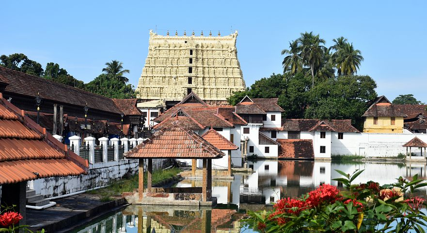
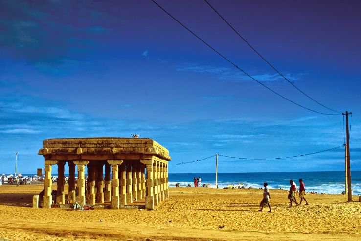
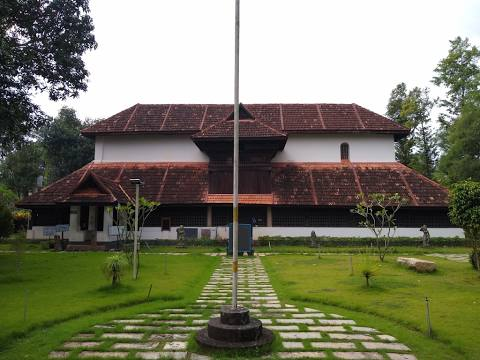

Sree Padmanabhaswamy Temple
The Shree Padmanabhaswamy Temple is a Hindu temple located in Thiruvananthapuram, the state capital of Kerala, India. It is considered as the richest place of worship in the world. The name of the city of 'Thiruvananthapuram' in Malayalam translates to "The City of Lord Ananta", referring to the deity of the Padmanabhaswamy temple.
Shankumugham Beach
Shankumugham Beach is a beach in Thiruvananthapuram district of Kerala, south India. The beach is on the western side of Thiruvananthapuram and very near to Trivandrum International Airport. The vast stretch of white sand and the serene atmosphere, away from the crowd in the city, provide all the ingredients for relaxation and for spending an ideal evening.
Napier Museum

The Napier Museum is an art and natural history museum situated in Thiruvananthapuram, India. The Museum is grounds to the Trivandrum Zoo, one of the oldest zoological gardens in India. The zoo was established in 1857 over 55 acres of land. It also contains the Sree Chitra Art Gallery, a separate art gallery established in 1935.
Koyikkal Palace
The Koyikkal Palace is a palace situated in Nedumangadu, Thiruvananthapuram District, Kerala, India. The palace was built in 16th century for Umayamma Rani of the Venad Royal Family. Umayamma Rani was the queen of Venad between 1677 and 1684. The palace is a double storied building and built in the traditional architectural style of Kerala.